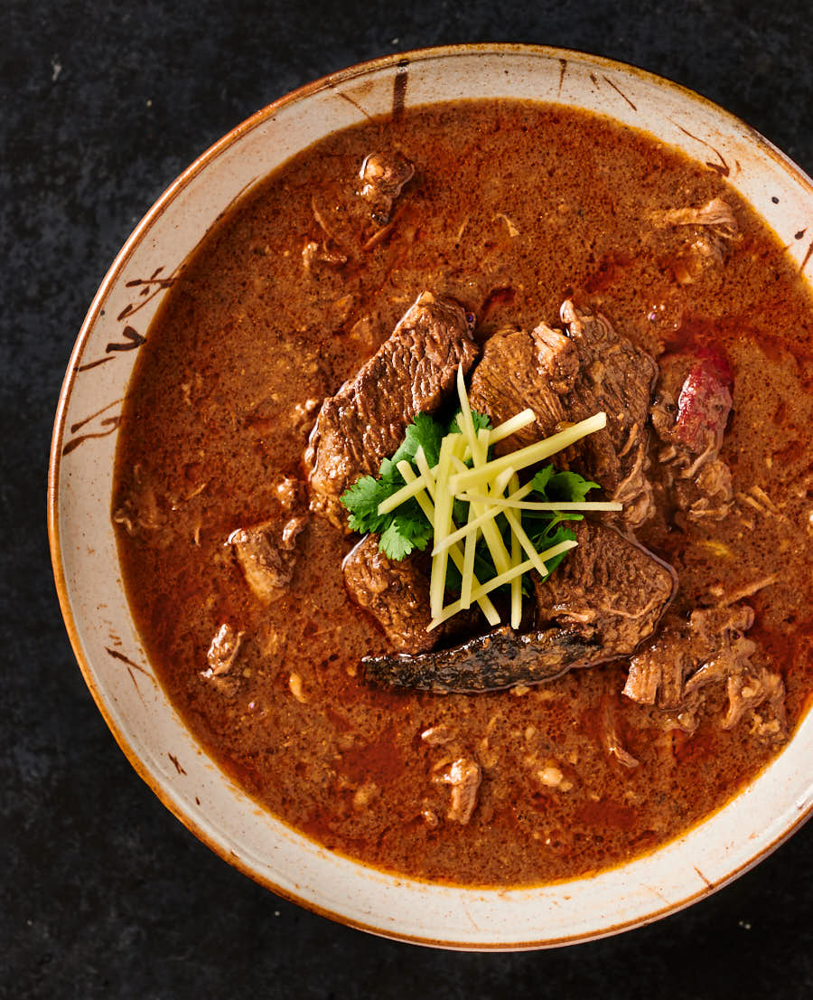

Nihari

Description
Nihari, Pakistan's national dish, is a slow-cooked stew featuring tender pieces of beef or mutton
infused with a rich blend of spices such as cloves, cardamom, and cinnamon. Known for its robust flavor,
Nihari is traditionally enjoyed for breakfast with naan or paratha, often garnished with fresh ginger,
cilantro, and green chilies. This iconic dish, originating from the Mughal era, reflects the diverse and
flavorful culinary heritage of Pakistan.
Ingredients
- 2 lb Large chunks of beef/veal - 3 inch pieces
- 1-2 lb bones
- 2 tbsp salt
- 1.5 tbsp ginger paste
- 1.5 tbsp garlic paste
- 1 tbsp red chilli powder
- 1 tbsp kashmiri chilli powder
- 1 tbsp coriander powder
- 1/2 tsp tumeric powder
- Ghee/Oil for cooking
- 1 large onion
- Shan nihari masala
Steps
- Heat oil in a large pot
- Thinly slice your onion, fry till golden brown then spread on paper towels to dry. (we will use these at the end)
- Add all the remaining ingredients in the first list and stir fry the meat until it's browned and the masala is cooked - about 4-5 minutes
- Then add your Nihari Masala Mix and 7 cups of water and stir well.
- Pressure cook for 45-50 minutes or slow cook for 4-5 hours undisturbed to get beautifully tender meat. For slow cooking stove top, bring the mixture to a boil then let it simmer covered.
- Once the time is up skim any greyish scum that may rise to the top and discard.
- Crush the onions and mix in, bring the nihari to a boil
- If you are serving this another time then set it aside for the nihari to cool.
- When ready to eat then dissolve ⅓ cup atta in 1 cup water and whisk briskly as you add it to the nihari
- The nihari will thicken as it cooks - 10 to 15 minutes
- Adjust consistency per liking (more water or atta+water), just remember you need to simmer after adding it to lose the raw taste.
- Heat a few tbsp of oil in a small saucepan and add 1.5 tbsp of Kashmiri laal mirch (for color) and add it on top of the nihari like a tadka/baghaar.
Source
The recipe is from flourandspice.com by author Sarah Mir
Source of the recipe